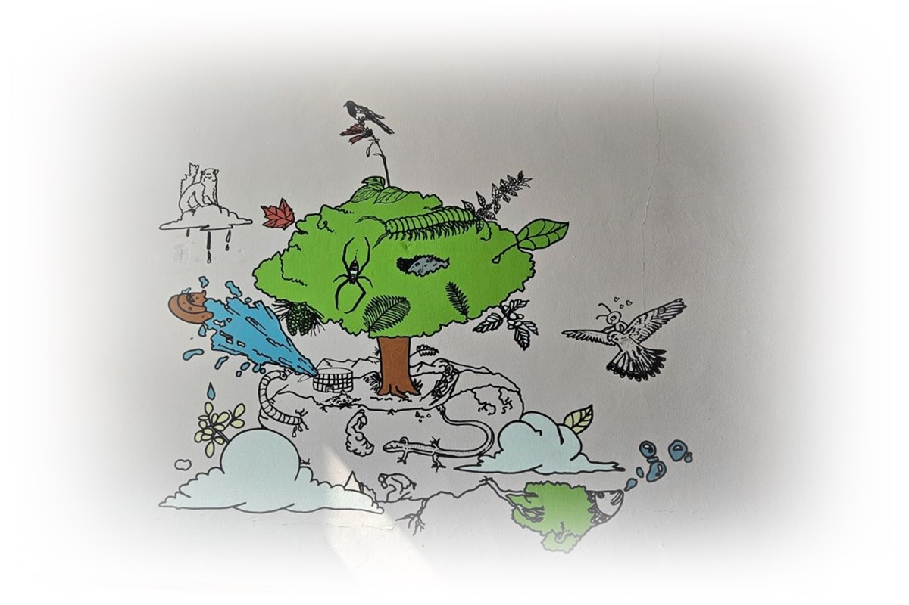

1. 생물학적 리듬과 정체성 탐색의 충돌
청소년기의 잠은 가장 오해받기 쉬운 발달 영역 중 하나이다. 늦게 잠들고, 아침에 일어나기 어려워하며, 밤이 되면 오히려 생각이 또렷해지는 모습은 흔히 게으름이나 생활 태도의 문제로 해석된다. 그러나 발달심리학적 관점에서 볼 때, 청소년기의 수면 변화는 생물학적 성숙과 심리사회적 전환이 동시에 진행되는 과정에서 나타나는 자연스러운 현상이다.
이 시기의 잠은 무너진 것이 아니라 재조정되고 있는 상태이며, 청소년은 잠을 ‘잃어버린’ 것이 아니라 ‘다시 배우고 있는’ 단계에 놓여 있다.
이 글은 브런치북(https://brunch.co.kr/@205593d149c84b6/3) 『감정도 잠이 필요하다』 2부 3장 〈청소년기: 흔들리는 리듬, 각성의 감정〉의 내용을 바탕으로, 청소년기의 수면 변화를 문제 행동이 아닌 발달적 재조정 과정으로 이해하고자 한다. 생물학적 리듬의 이동과 정체성 탐색이 밤의 각성과 어떻게 연결되는지를 중심으로 설명한다.

2. 생물학적 리듬의 변화와 수면 지연
청소년기에는 사춘기 호르몬 변화와 함께 생체시계가 뒤로 이동하는 현상이 나타난다. 멜라토닌 분비 시점이 늦어지면서 자연스러운 졸림이 밤늦게 나타나고, 아침 각성은 어려워진다. 이는 의지나 습관의 문제가 아니라 신경생물학적 변화에 따른 발달 특성이다. 이러한 리듬 변화 위에 학교 등교 시간, 학업 부담, 미디어 사용이 겹치면서 만성적인 수면 부족으로 이어지기 쉽다. 따라서 청소년기의 수면 문제를 이해하기 위해서는 먼저 ‘리듬이 바뀌고 있다’는 사실을 인정하는 것이 필요하다.
3. 정체성 탐색과 밤의 각성
Erik Erikson에 따르면, 청소년기는 정체성 대 역할 혼란의 단계로, “나는 누구인가”라는 질문이 본격적으로 등장하는 시기이다. 이 질문은 낮에는 활동과 관계 속에 잠시 묻혀 있다가, 밤이 되면 생각과 감정의 형태로 떠오른다. 잠들기 전 반복되는 사고, 미래에 대한 불안, 관계에서의 긴장은 청소년기의 수면을 각성 상태로 만든다. 이때의 각성은 단순한 불면이 아니라, 자아를 조직하려는 심리적 활동이 밤으로 이동한 결과라 볼 수 있다.
4. 인지 발달과 사고의 확장
Jean Piaget의 이론에 따르면 청소년기는 형식적 조작기에 해당하며, 추상적 사고와 가설적 사고가 가능해진다. 이로 인해 청소년은 과거를 반추하고, 미래를 상상하며, 여러 가능성을 동시에 고려하는 사고를 하게 된다. 이러한 인지적 확장은 사고의 깊이를 넓히지만, 동시에 밤 시간에 생각이 멈추지 않는 경험을 증가시킨다. 잠들기 전의 사고 과잉은 인지 발달의 부산물이며, 이를 병리적으로만 해석할 경우 청소년의 발달적 특성을 놓치게 된다.
5. 교육·상담 장면에서의 발달적 접근
청소년기의 수면 개입에서 가장 중요한 원칙은 통제보다 이해이다. “일찍 자라”는 지시는 리듬의 현실을 무시한 개입이 되기 쉽다. 발달심리 관점에서는 수면 시간을 강제하기보다, 낮 동안의 각성과 밤의 휴식이 균형을 이룰 수 있도록 환경을 조정하는 접근이 필요하다. 수면에 대한 자기 비난을 줄이고, 리듬의 변화를 설명해 주는 것만으로도 불안은 완화될 수 있다. 청소년기의 잠은 규율의 대상이 아니라, 발달 변화에 대한 교육과 조율의 대상이다.
결론
청소년기의 잠은 불안정해 보이지만, 이는 발달이 흔들리고 있다는 신호가 아니라 재편되고 있다는 증거이다. 생물학적 리듬의 이동, 인지 능력의 확장, 정체성 탐색이 동시에 진행되는 이 시기에 밤은 가장 활발한 심리적 공간이 된다. 청소년기의 수면 문제를 교정의 대상으로만 볼 경우, 발달의 중요한 언어를 놓치게 된다. 반대로 잠을 발달의 관점에서 이해할 때, 청소년의 밤은 혼란의 시간이 아니라 성장의 일부로 해석될 수 있다. 청소년기의 잠을 존중하는 일은, 변화하는 자아가 안전하게 자리 잡을 수 있도록 돕는 중요한 발달적 지지라 할 수 있다.
“청소년기의 잠은 무너진 것이 아니라 생물학적·심리적 리듬이 재편되는 과정이다.”
참고문헌
Erik Erikson(1968). Identity: Youth and Crisis. New York: Norton.
Jean Piaget(1972). Intellectual Evolution from Adolescence to Adulthood. Human Development.
정옥분 (2020). 『청소년 발달과 심리』. 서울: 학지사.
김미숙 (2019). 『청소년기의 정서와 적응』. 서울: 공동체.
이은경·박지선 (2021). 『청소년 수면과 정신건강』. 서울: 학지사.
2026.01.07 - [감정도 잠이 필요하다] - 아동기 잠의 발달심리(2): 아동의 불안은 왜 밤에 깨어나는가
2024.01.23 - [이론] - 매슬로우 욕구 5단계 위계이론 - 물질적, 심리적 정서의 충족
매슬로우 욕구 5단계 위계이론 - 물질적, 심리적 정서의 충족
1. 매슬로우 욕구 5단계 이론의 의의 매슬로우(Maslow)가 제안한 욕구 이론(Maslow's hierarchy of needs)에서는 기본 욕구와 성장욕구 두 가지 형태로 구별하고 있다. 욕구발달에는 기본 욕구와 성장욕구
think-sis.co.kr